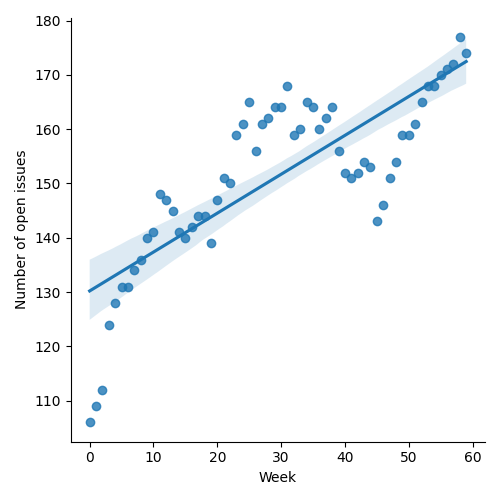
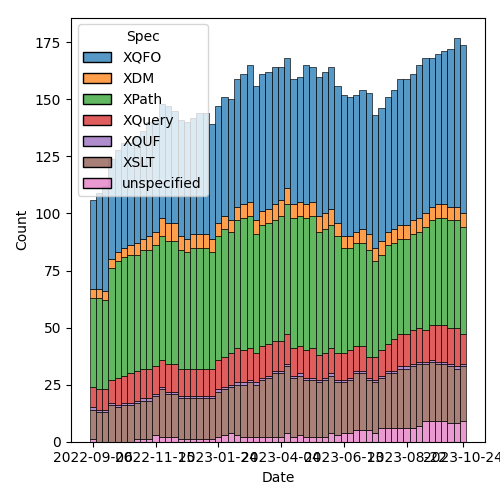
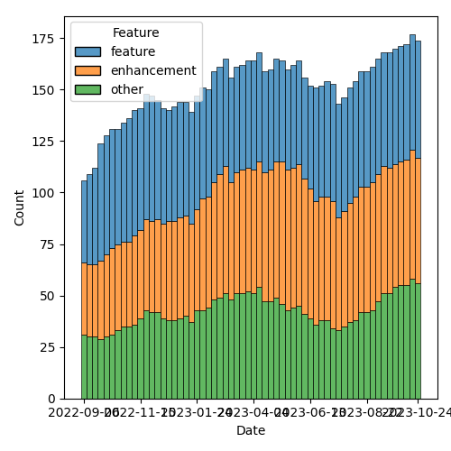

QT4 CG Meeting 052 Minutes 2023-10-31
Table of Contents
- Minutes
- Summary of new and continuing actions
[0/8] - 1. Administrivia
- 2. Technical Agenda
- 2.1. Issue #689: fn:stack-trace: keep or drop?
- 2.2. Issue #130: New super/union type xs:binary?
- 2.3. PR #772: Revise the fn:parse-html rules to make them clearer to follow.
- 2.4. PR #770: 566: Use fn:decode-from-uri in fn:parse-uri
- 2.5. PR #753: 65: Allow xmlns="xxx" to NOT change the default namespace for NameTests
- 2.6. Issue #651: the name of the fn:log function
- 3. Any other business?
- 4. Adjourned
Agenda index / QT4CG.org / Dashboard / GH Issues / GH Pull Requests
Minutes
Approved at meeting 053 on 7 November 2023.
Summary of new and continuing actions [0/8]
[ ]QT4CG-052-01: MK to propose text for mutual promotion between xs:hexbinary and xs:base64Binary[ ]QT4CG-052-02: NW to consider how to schedule an “editor’s meeting”
1. Administrivia
1.1. TODO Roll call [9/11]
Regrets from DN. MSM may have to leave early.
[X]Reece Dunn (RD)[X]Sasha Firsov (SF)[X]Christian Grün (CG)[X]Joel Kalvesmaki (JK) [:10-][X]Michael Kay (MK)[X]John Lumley (JL)[ ]Dimitre Novatchev (DN)[X]Wendell Piez (WP)[ ]Ed Porter (EP)[X]C. M. Sperberg-McQueen (MSM)[X]Norm Tovey-Walsh (NW). Scribe. Chair.
1.2. Accept the agenda
Proposal: Accept the agenda.
Accepted.
1.2.1. Status so far…

Figure 1: “Burn down” chart on open issues

Figure 2: Open issues by specification

Figure 3: Open issues by type
1.3. Approve minutes of the previous meeting
Proposal: Accept the minutes of the previous meeting.
Accepted.
1.4. Next meeting
The next meeting is scheduled for Tuesday, 7 November 2023.
No regrets heard.
1.5. Review of open action items [8/8]
[X]QT4CG-046-01: MK to continue the work on #129 for the other specs (we accepted #703)[X]QT4CG-050-02: MP to attempt to summarize this discussion and identify specific issues[X]QT4CG-051-01: NW to attempt to craft a new issue for the remaining items in #129- Overtaken by events
[X]QT4CG-051-02: NW to attempt to draft a proposal for fn:invisible-xml[X]QT4CG-051-03: MK to check that in our view schema components don’t indirectly reference the schema root[X]QT4CG-051-04: DN to make the point that in simple, static cases, the arrow operators may be better.[X]QT4CG-051-05: DN to correct the typo in item 3 “could be sequence” => “could[X]QT4CG-051-06: MK to help DN with the markup in fn:chain examples.
1.6. Review of open pull requests and issues
1.6.1. Blocked
The following PRs are open but have merge conflicts or comments which suggest they aren’t ready for action.
1.6.2. Merge without discussion
The following PRs are editorial, small, or otherwise appeared to be uncontroversial when the agenda was prepared. The chairs propose that these can be merged without discussion. If you think discussion is necessary, please say so.
- PR #787: 783(part) - Editorial changes to Serialization spec
- PR #786: 695: Added xref to fn:slice()
- PR #785: 777: updated history
- PR #784: fos xsd
- PR #782: 469: array:of-members, map:of-pairs: Signatures, Examples
- PR #778: XQFO edits 5.4-5.6
Proposal: accept these PRs without discussion
Approved
1.6.3. XSLT focused
The following PRs appear to be candidates for a future XSLT-focussed meeting.
These issues identify the XSLT-focused changes that have been made to the specifications but which have not been established by the community group as the status quo.
1.6.4. Substantive PRs
The following substantive PRs were open when this agenda was prepared.
- PR #775: 517: Reflected Christian Gruen's remarks
- PR #772: Revise the fn:parse-html rules to make them clearer to follow.
- PR #770: 566: Use fn:decode-from-uri in fn:parse-uri
- PR #753: 65: Allow xmlns="xxx" to NOT change the default namespace for NameTests
- PR #719: 413: Spec for CSV-related functions
- PR #529: 528: revision of json(), and renaming to elements-to-maps()
1.6.5. Proposed for V4.0
2. Technical Agenda
2.1. Issue #689: fn:stack-trace: keep or drop?
See issue #689.
- CG: The way this function is specified now, it’s very implementation specific.
- … I think only Saxon woulud be able to do what’s described in the specification.
- … For BaseX, we lose a lot of information because of function inlining.
- RD: MarkLogic does have an XML-based stack trace, I’ve generally
found an XML-based trace more useful than a string based one.
- … You can do additional processing with the XML
- MK: I doubt we’ll be able to define interoperable output for stack trace.
- The main idea was to have an interoperable way of invoking it.
- RD: The main thing to get is the inner-most point where the exception was raised. Other bits of context are useful, but can be more flexible.
- SF: Are you proposing to create a schema for the stack trace, to be extended by vendors?
- RD: That could be useful. MarkLogic includes additional variables and things, but having a common base of file number, line number, module path, … would be good.
- WP: I think this is more a question of where to draw a line about conformity of implementations. A strict schema for the output could be very hard to get. The results are likely to be very processor-specific. It should allow maximum freedom in what’s delivered. We could use iXML to go from text back to XML.
- JL: I can’t see any point in going out to text and then going back to structure. The processor has the best context. Are you trying to debug the processor or the program? Most of the folks debugging a processor are probably in this room. There are a lot more users trying to debug their programs. Optimization makes the stack traces just really hard to get. Who is this for?
- RD: To answer the processor or the program, it’s mostly the program. What you often have is a large, complicated application that you’re making calls to. Somewhere deep in that application something goes wrong. When you get it back from your application, “empty sequence can’t be cast as a int”, you have no idea what happened. Any kind of stack trace is probably useful.
- MSM: I find it helpful to have a way to ask “what’s happening” in my
queries. I find the standard
fn:trace()function useful and by analogy, I think a common way to do stack traces would be useful.- … Since a trace message is always directed to me, a human, and not software, I don’t need standarization across processors. Regularity is less important.
- SF: The primary consumer for stack traces is not humans, it’s IDEs. In that context, there are standards. Having a special case for us in XML could work for us. But it would have to be integrated into IDEs. Do we want it to be a standard, or let vendors do it? I think it’s better to make it part of the standard.
- CG: I think we all agree that it’s useful to have a look at the
stack trace. Would it also make it part of exceptions, because many
languages let you look at the stack trace in an exception.
- … Because the languages provide so much freedom for optimization, I wonder if the output will be useful. If we implemented stack tracing, then we’d want to suppress some optimizations. That would mean adding the stack trace function would very likely hide the error! I’m not sure we’d meet user expectations.
- RD: One of the use cases is in things like logging exceptions from REST APIs. Where if you just get a message, you don’t have any context. Being able to get the stack trace, even if it isn’t 100% perfect, will help in understanding where the error is. You can provide information for the IDEs as well.
Straw poll: Given the discussion we’ve heard, do you think it’s worth pursuing a standard stack-trace function, or should we leave it to processor extensions? In favor: 4. Opposed: 2.
- MK: I think the bias should always be towards not doing something.
The chair is reluctant to call that consensus in either direction. Cowardly decides to simply leave the issue open for now, but not plan to discuss it again anytime soon.
2.2. Issue #130: New super/union type xs:binary?
See issue #130.
- CG: The idea was we have xs:numeric for all kinds of numbers, I get repeated questions about why there’s no xs:binary function. Today we could use a union. From a user perspective, it would be very nice.
- NW: MK, you proposed an alternative.
- MK: We could make them mutually promotable. That achieves much of the same objective and seems to be more consistent with how we’ve addressed similar issues.
- JL: The only difference between the two binary formats is how they’re parsed and “serialized”. I’m tempted to agree with MK.
- MSM: Point of information: if we made it a union type, would either order work?
Some discussion of whether or not the two types are disjoint. Conclusion: there is some overlap.
- MSM: Could you ever get the wrong answer if it was a union type?
Consensus (the scribe believes) was “yes”.
- RD: The issue is what happens if you do xs:binary on an ambiguous string.
- MSM: What do you get if you cast a numeric to a string?
- MK: I don’t recall, but there is an order.
ACTION QT4CG-052-01: MK to propose text for mutual promotion between xs:hexbinary and xs:base64Binary
2.3. PR #772: Revise the fn:parse-html rules to make them clearer to follow.
See PR #772
RD suggests delaying this until after comments on the PR have been addressed.
2.4. PR #770: 566: Use fn:decode-from-uri in fn:parse-uri
See PR #770
NW reviews the PR.
Proposal: Merge this PR and continue to work on the tests.
Agreed.
- WP: There’s no verb in item 37.
- NW: Thank you.
2.5. PR #753: 65: Allow xmlns="xxx" to NOT change the default namespace for NameTests
See PR #753
MK reviews the PR.
- MK: This is an opportunity to fix an XQuery issue.
- … Adding the keyword
fixed. Afixeddefault namespace in your element declarations don’t effect the default namespace for elements and typed. - … The other part is that you do want the default namespace declaration to effect nested element constructors.
- … Adding the keyword
- MK: In element constructors, we change what happens when you say
xmlns=something.
MK summarizes the new rules…
Proposal: merge this PR?
Accepted.
2.6. Issue #651: the name of the fn:log function
CG summarizes the issue.
- MK: The semantics are very, very close to xsl:message
- MK: I’d want to have a single API that captures the message
- JK: It would be nice if we could reconcile the two mechanisms and have message for both.
- … Can the output of xsl:message be promoted to item or sequence in XSLT and try to merge them
- MK: For simplicity, we should be producing a string here.
NW suggests that we’re drifting towards fn:message.
- SF: How does log-level (error, warning, etc.) fit in?
General consensus that we don’t have log levels, and that may be a good reason not to use fn:log.
- WP: Is the real blocker here that the semantics wrt XSLT?
- MK: Is it close enough to get benefit from name recognition or far enough away that it generates confusion.
Proposal: we call it fn:message instead of fn:log?
Accepted.
- SF: What about actual level-based long functionality?
Agreement that that is a separate issue.
3. Any other business?
- MK: What can we do about blocked PRs? One common problem appears to be overlapping edits to the changes appendix.
MK proposes using editorial notes at the point of change. That seems to win some support, let’s try that.
- JK: One thing that could be useful would be to do a walkthrough about what to do when editing.
Nods of agreement.
- NW: Yes, we have more editors now. Perhaps we should have an editor’s meeting. I’ll investigate.
ACTION QT4CG-052-02: NW to consider how to schedule an “editor’s meeting”
- NW: Thank you all for a year of hard work!
Some discussion of a face-to-face meeting. Perhaps colocated with XML Prague in June?